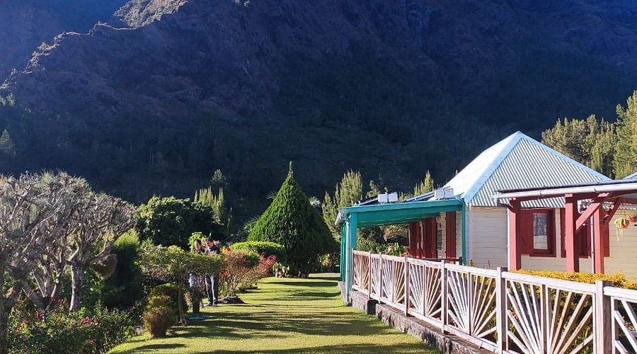
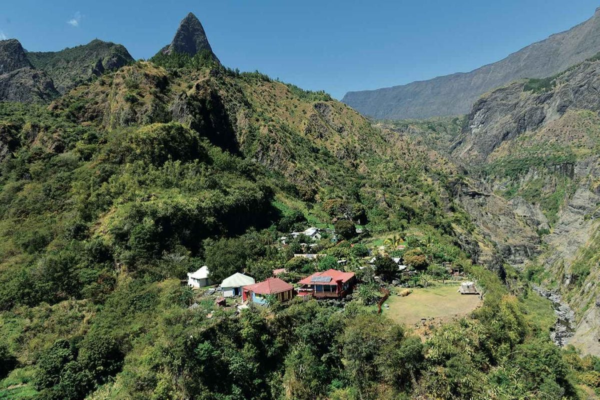
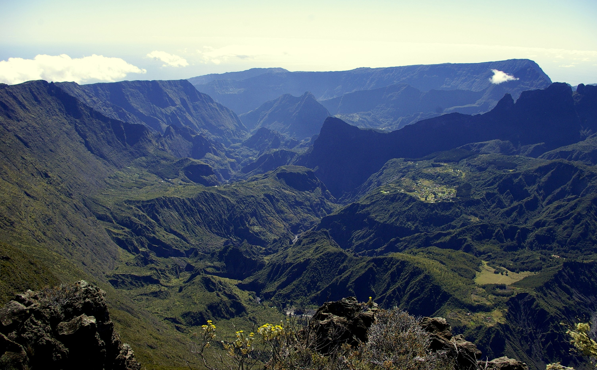

Le dernier refuge sauvage de La Réunion, accessible uniquement à pied ou par hélicoptère.
Le Cirque de Mafate est un lieu unique au monde. Entouré de remparts vertigineux, c'est le seul endroit de France totalement inaccessible par la route. Pas d'asphalte, pas de voitures — seulement des sentiers de randonnée, le bruit des rivières et le silence des hauteurs.
Ses habitants, les Mafatais, vivent dans des îlets — de petits hameaux dispersés dans le cirque — et reçoivent leurs ravitaillements par hélicoptère. Cette vie à l'écart du monde moderne leur confère une culture et une identité uniques, empreintes de résilience et d'indépendance.
Classé au Patrimoine Mondial de l'UNESCO en 2010 dans le cadre des "Pitons, Cirques et Remparts de l'île de La Réunion", Mafate est protégé comme un trésor naturel et humain irremplaçable.



Aux XVIIe et XVIIIe siècles, les remparts imprenables de Mafate servaient de refuge naturel aux esclaves marrons — ceux qui avaient fui les plantations pour reconquérir leur liberté. L'inaccessibilité du cirque en faisait un sanctuaire que les forces coloniales peinaient à atteindre.
C'est de ce passé douloureux et résistant que Mafate tire son âme si particulière. Chaque sentier, chaque rempart porte en lui la mémoire de ces hommes et femmes qui ont choisi la montagne plutôt que la servitude.
Cette histoire donne au lieu une atmosphère d'indépendance et de résilience que l'on ressent encore aujourd'hui en parcourant ses sentiers.
Aujourd'hui, plusieurs îlets constituent la vie du cirque : La Nouvelle, Aurère, Grand Place, Roche Plate, Marla, Cayenne... Chaque hameau possède son école, sa chapelle et son hélistation — seul lien avec le monde extérieur pour l'approvisionnement.
Les Mafatais ont progressivement intégré la modernité dans leur quotidien — panneaux solaires, internet par satellite — tout en maintenant ce mode de vie singulier, profondément ancré dans la terre et la montagne.
Une modernisation qui se fait à leur rythme, selon leurs choix, loin de l'agitation du monde connecté.
"Mafate n'est pas un endroit que l'on visite. C'est un endroit que l'on mérite, après des heures de marche — et alors seulement, il se révèle."— Tradition des randonneurs réunionnais
L'entrée principale depuis le Cirque de Salazie. Sentier bien tracé, vue panoramique dès le col. Idéal pour rejoindre La Nouvelle ou Grand Place.
Depuis le belvédère du Maïdo (2 205 m), le sentier descend vers Roche Plate et Aurère. Le point de vue depuis le sommet est l'un des plus spectaculaires de l'île.
Accessible depuis Cilaos, ce col relie les deux cirques. Une traversée mythique qui emprunte des sentiers taillés à flanc de rempart.
L'accès aérien offre une vue imprenable sur la totalité du cirque. Utilisé principalement pour le ravitaillement des habitants et les évacuations médicales.
Mafate est le paradis de la randonnée réunionnaise. Ses sentiers balisés parcourent des paysages d'une diversité extraordinaire : forêts de tamarins, ravines profondes, crêtes aériennes et îlets fleuris.
Attention : le terrain est exigeant. Les dénivelés sont importants, les sentiers parfois accidentés et le climat capricieux. Une bonne condition physique et un équipement adapté sont indispensables avant de descendre dans le cirque.
2h • Niveau modéré • Sentier principal, le plus fréquenté du cirque
3h • Niveau modéré • Traverse plusieurs îlets avec vues panoramiques
Niveau sportif • Le grand classique de Mafate, avec nuits en gîte
4h • Niveau difficile • Descente vertigineuse, panoramas époustouflants
Le cirque crée son propre microclimat. Le brouillard peut tomber rapidement. Prévoir des vêtements imperméables et consulter la météo avant de partir.
Des gîtes de randonnée accueillent les marcheurs dans les principaux îlets. Réservation obligatoire en haute saison (juillet-août).
Prévoir suffisamment d'eau. Quelques gîtes proposent des repas. L'alimentation se fait sinon en autonomie complète.